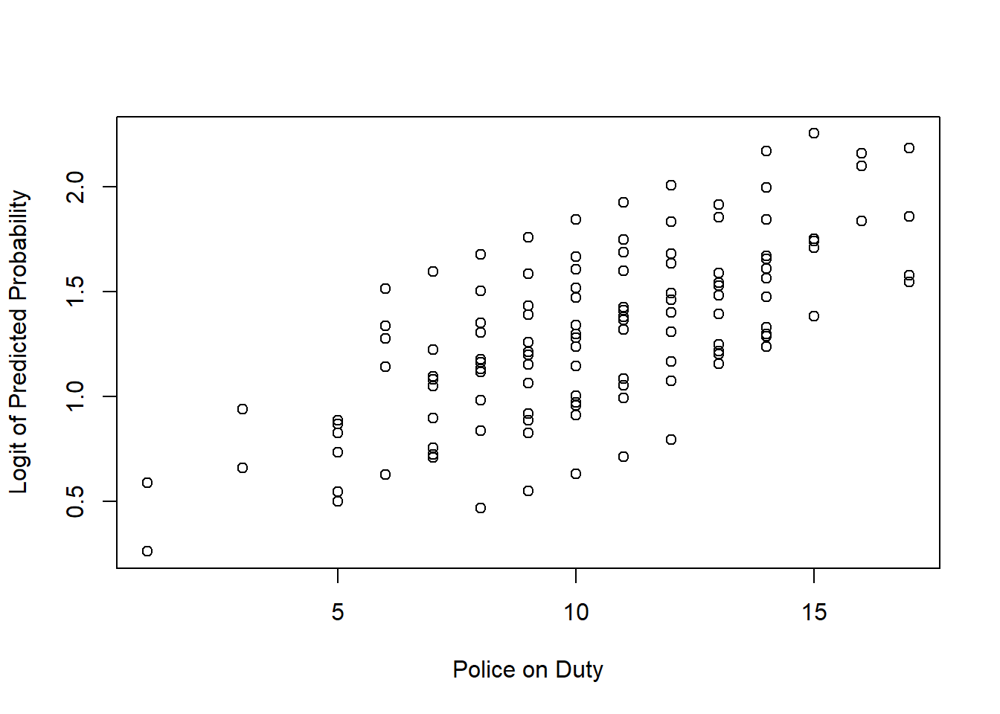

8 Regression Analysis
Regression analysis is one of the most commonly used statistical techniques for exploring relationships between variables. This chapter will walk you through the fundamentals of regression analysis in R, comparing it with similar procedures in SPSS. We will cover simple and multiple linear regression, logistic regression, and the necessary steps to validate your models thoroughly, including checking assumptions, transformations, and handling multicollinearity.
8.1 Introduction to Regression Analysis
Regression analysis aims to model the relationship between a dependent variable (often referred to as the outcome or response variable) and one or more independent variables (predictors). The output of a regression model helps in understanding the influence of predictors on the outcome and can be used for prediction purposes.
8.1.1 What is Linear Regression?
Linear regression models the relationship between a dependent variable \(Y\) and one or more independent variables \(X\). The simplest form is the linear equation:
\[ Y = \beta_0 + \beta_1 X_1 + \epsilon \]
Where:
- \(Y\) is the dependent variable.
- \(\beta_0\) is the intercept.
- \(\beta_1\) is the slope of the line (coefficient of \(X_1\)).
- \(X_1\) is the independent variable.
- \(\epsilon\) is the error term, representing the difference between observed and predicted values.
8.2 Simple Linear Regression in R
In this section we will utilise a fictional dataset on Violence Against Women & Girls (VAWG). You can download a copy by clicking on the link.
8.2.1 Performing Simple Linear Regression
Simple linear regression involves a single independent variable. In R, this is done using the lm() function.
# Perform simple linear regression
model <- lm(y ~ x, data = data)
# View the model summary
summary(model)SPSS Equivalent: In SPSS, linear regression is performed through Analyse > Regression > Linear….
In this example, we will fit a linear model to predict the number of Reported_VAWG_Incidents in a given geographic area using the Unemployment_Rate.
# Load the dataset from csv file
data_vawg <- read.csv('data/data_vawg.csv')
# Perform simple linear regression
model <- lm(Reported_VAWG_Incidents ~ Unemployment_Rate, data = data_vawg)
# View the model summary
summary(model)##
## Call:
## lm(formula = Reported_VAWG_Incidents ~ Unemployment_Rate, data = data_vawg)
##
## Residuals:
## Min 1Q Median 3Q Max
## -28.883 -7.665 0.156 8.327 36.064
##
## Coefficients:
## Estimate Std. Error t value Pr(>|t|)
## (Intercept) 132.4752 4.3074 30.755 < 2e-16 ***
## Unemployment_Rate 2.5977 0.4188 6.203 1.32e-08 ***
## ---
## Signif. codes: 0 '***' 0.001 '**' 0.01 '*' 0.05 '.' 0.1 ' ' 1
##
## Residual standard error: 12.26 on 98 degrees of freedom
## Multiple R-squared: 0.282, Adjusted R-squared: 0.2746
## F-statistic: 38.48 on 1 and 98 DF, p-value: 1.321e-088.2.2 Interpreting the Output
When you run the summary(model) command, the following elements are crucial:
Coefficients: These indicate the relationship between the independent variable (Unemployment_Rate) and the dependent variable (VAWG). A positive coefficient for Unemployment Rate suggests that as Unemployment Rate increases, the Number of VAWG Incidents also increases.
R-squared: This statistic tells you the proportion of variance in the dependent variable that can be explained by the dependent variable. An R-squared close to 1 indicates a good fit.
P-value: Associated with the coefficients, the p-value helps you determine whether the relationship between the variables is statistically significant. A p-value less than 0.05 typically indicates significance. We can see – indicated by the three ’***’ – that the relationship between unemployment and the number of incidents is statistically significant.
SPSS Equivalent: SPSS outputs similar tables with coefficients, R-squared values, and significance levels.
8.3 Multiple Linear Regression
Multiple linear regression extends simple linear regression by including more than one independent variable.
8.3.1 Performing Multiple Linear Regression
Extending the model is easily completed by increasing the number of terms in the lm() function.
# Perform multiple linear regression
model_multiple <- lm(y ~ x1 + x2 + x3, data = data)
# View the model summary
summary(model_multiple)In this example we will expand our model to predict the Number of Reported VAWG Incidents by increasing the number of independent variables.
# Perform multiple linear regression
model_multiple <- lm(Reported_VAWG_Incidents ~ Unemployment_Rate +
Community_Programs +
Population_Density +
Police_Patrols,
data = data_vawg)
# View the model summary
summary(model_multiple)##
## Call:
## lm(formula = Reported_VAWG_Incidents ~ Unemployment_Rate + Community_Programs +
## Population_Density + Police_Patrols, data = data_vawg)
##
## Residuals:
## Min 1Q Median 3Q Max
## -26.8934 -5.8510 0.5094 6.1948 26.8093
##
## Coefficients:
## Estimate Std. Error t value Pr(>|t|)
## (Intercept) 156.337257 9.142655 17.100 < 2e-16 ***
## Unemployment_Rate 2.543248 0.359892 7.067 2.64e-10 ***
## Community_Programs -2.155397 0.350556 -6.149 1.83e-08 ***
## Population_Density 0.001013 0.002283 0.443 0.658
## Police_Patrols -0.057337 0.116747 -0.491 0.624
## ---
## Signif. codes: 0 '***' 0.001 '**' 0.01 '*' 0.05 '.' 0.1 ' ' 1
##
## Residual standard error: 10.51 on 95 degrees of freedom
## Multiple R-squared: 0.4886, Adjusted R-squared: 0.4671
## F-statistic: 22.69 on 4 and 95 DF, p-value: 3.545e-138.3.2 Detailed Interpretation of the Output
Coefficients: Each coefficient represents the effect of a one-unit change in the predictor while holding the other variables constant. For instance, the coefficient for
Community_Programsindicates how much theReported_VAWG_Incidentsdecreases (or increases with a positive coefficient) with an increase in the number ofCommunity_Programs, assuming the other variables remain unchanged.R-squared and Adjusted R-squared: R-squared indicates the proportion of variance explained by all predictors. Adjusted R-squared adjusts for the number of predictors in the model, providing a more accurate measure when comparing models with different numbers of predictors.
P-values: Check these for each predictor to determine if they significantly contribute to the model.
8.4 Checking Model Assumptions
It’s crucial to check if the assumptions of linear regression are met before trusting the results. This section runs through how to check the various assumptions.
SPSS Equivalent: SPSS provides diagnostics to check these assumptions under the Regression dialog, though some assumptions like multicollinearity (VIF) require manual checks through syntax or additional output.
8.4.1 Assumption 1: Linearity
The relationship between the predictors and the outcome should be linear.
How to Check: Plot residuals versus fitted values. If the assumption is met, the points should scatter randomly around the horizontal line (y = 0).
#Plot residuals vs fitted values
plot(model_multiple$fitted.values, resid(model_multiple))
#Add horizontal line at y = 0
abline(h = 0, col = "red")
8.4.2 Assumption 2: Normality of Residuals
Residuals (errors) should be normally distributed.
How to Check: Create a Q-Q plot. Residuals should closely follow the 45-degree line.
#Create a Q-Q plot
qqnorm(resid(model_multiple))
#Add Q-Q line
qqline(resid(model_multiple), col = "red")
8.4.3 Assumption 3: Homoscedasticity
Residuals should have constant variance across all levels of the independent variables.
How to Check: The Scale-Location plot helps diagnose this. Look for a horizontal line with equally spread points.

8.4.4 Assumption 4: Independence of Errors
Errors should be independent of each other.
How to Check: The Durbin-Watson test can be performed using the car package.
## Loading required package: carData## lag Autocorrelation D-W Statistic p-value
## 1 -0.2217769 2.415587 0.03
## Alternative hypothesis: rho != 08.4.5 Assumption 5: Multicollinearity
Predictors should not be too highly correlated with each other, as this can inflate standard errors and make it difficult to determine the effect of each predictor.
How to Check: The Variance Inflation Factor (VIF) helps in detecting multicollinearity. VIF values greater than 10 may indicate problematic multicollinearity.
## Unemployment_Rate Community_Programs Population_Density Police_Patrols
## 1.005358 1.005636 1.020414 1.0211918.5 Transformations and Interaction Terms
8.5.1 When and How to Apply Transformations
Transformations can help correct violations of assumptions. For example:
Log Transformation: Useful when the relationship between the variables is exponential rather than linear.
#Linear Model with Log Transformation
model_log <- lm(log(y) ~ x1 + x2 + x3, data = data)
summary(model_log)Square Root Transformation: Applied to right-skewed data to stabilise variance.
8.5.2 Using Interaction Terms
Interaction terms allow you to model the combined effect of two or more predictors.
#Create Linear Model with Interaction Term
model_interaction <- lm(y ~ x1 * x2, data = data)
summary(model_interaction)SPSS Equivalent: SPSS allows adding interaction terms through manual creation or using the Paste option to modify syntax.
For instance, the effect of Unemployment_Rate on Reported_VAWG_Incidents might depend on the level of Population_Density. Let us include an interaction term between Unemployment_Rate and Population_Density.
#Create Linear Model with Interaction Term
model_interaction <- lm(Reported_VAWG_Incidents ~ Unemployment_Rate * Population_Density, data = data)
summary(model_interaction)The interaction term (Unemployment_Rate:Population_Density) allows us to see how the relationship between Unemployment_Rate and Reported_VAWG_Incidents changes at different levels of Population_Density.
Exercise!
Residential burglaries are on the up and you want to assess which factors are contributing to the increase. Using the following dataset data_burglaries perform a multiple linear regression.
8.6 Logistic Regression
When the dependent variable is binary (e.g., Yes/No, 0/1), logistic regression is appropriate.
In this section we will utilise a fictional dataset on Police Arrests. You can download a copy by clicking on the link.
8.6.1 Performing Logistic Regression in R
Logistic regression in R is handled by the glm() function with the family parameter set to binomial.
#Create a logistic regression model
model_logistic <- glm(y ~ x1 + x2, data = data, family = binomial)
summary(model_logistic)For example, we want to analyse the factors that influence whether an arrest is made following a reported crime.
# Load the dataset from csv file
data_arrests <- read.csv('data/data_arrests.csv')
#Note that some of the variables need to be converted to factors
data_arrests$Crime_Type = factor(data_arrests$Crime_Type)
data_arrests$Time_of_Day = factor(data_arrests$Time_of_Day)
#Create a logistic regression model
model_logistic <- glm(Arrest_Made ~ Crime_Type +
Time_of_Day +
High_Crime_Area +
Police_On_Duty,
data = data_arrests,
family = binomial)
summary(model_logistic)##
## Call:
## glm(formula = Arrest_Made ~ Crime_Type + Time_of_Day + High_Crime_Area +
## Police_On_Duty, family = binomial, data = data_arrests)
##
## Coefficients:
## Estimate Std. Error z value Pr(>|z|)
## (Intercept) 0.08619 0.70859 0.122 0.903
## Crime_TypeBurglary 0.23511 0.51006 0.461 0.645
## Crime_TypeRobbery 0.06021 0.48679 0.124 0.902
## Crime_TypeTheft -0.27908 0.48041 -0.581 0.561
## Time_of_DayNight 0.37125 0.35067 1.059 0.290
## High_Crime_Area 0.32596 0.35093 0.929 0.353
## Police_On_Duty 0.08227 0.05779 1.424 0.155
##
## (Dispersion parameter for binomial family taken to be 1)
##
## Null deviance: 210.76 on 199 degrees of freedom
## Residual deviance: 205.49 on 193 degrees of freedom
## AIC: 219.49
##
## Number of Fisher Scoring iterations: 48.6.2 Interpreting Logistic Regression Output
- Coefficients: In logistic regression, the coefficients represent the change in the log odds of the dependent variable for a one-unit increase in the predictor variable. To make the results more interpretable, you can convert the coefficients to odds ratios using the
exp()function.
## (Intercept) Crime_TypeBurglary Crime_TypeRobbery Crime_TypeTheft Time_of_DayNight High_Crime_Area Police_On_Duty
## 1.0900091 1.2650521 1.0620617 0.7564795 1.4495484 1.3853646 1.0857535Odds Ratios: An odds ratio greater than 1 indicates that as the predictor increases, the odds of the outcome occurring (vs = 1) increase. An odds ratio less than 1 indicates a decrease in the odds.
P-values: Similar to linear regression, p-values help determine whether the predictors are statistically significant. A p-value less than 0.05 typically suggests that the predictor has a significant effect on the outcome.
Deviance: The null deviance represents a model with only the intercept, and the residual deviance represents the model with the predictors. A significant reduction in deviance suggests that the predictors improve the model.
AIC (Akaike Information Criterion): A lower AIC value indicates a better-fitting model, accounting for model complexity.
8.7 Checking Model Assumptions for Logistic Regression
Just like linear regression, logistic regression has assumptions that must be checked to ensure the model’s validity.
8.7.1 Assumption 1: Linearity of the Logit
The relationship between continuous predictors and the logit of the outcome should be linear. You can check this by plotting the predictor against the logit of the predicted probabilities.
How to Check: For each predictor, plot the logit of predicted probabilities against the predictor.
# Predicted probabilities
preds <- predict(model_logistic, type = "response")
# Logit transformation
logit <- log(preds / (1 - preds))
# Plot logit vs predictor
plot(data_arrests$Police_On_Duty, logit,
xlab = "Police on Duty",
ylab = "Logit of Predicted Probability")
If the relationship is not linear, consider transforming the predictor or adding a nonlinear term.
8.7.2 Assumption 2: Independence of Observations
Each observation should be independent. This assumption is more about the study design than something that can be directly tested through the data.
How to Address: Ensure that the data collection process does not introduce dependencies between observations.
8.7.3 Assumption 3: Absence of Multicollinearity
As with linear regression, multicollinearity can inflate the standard errors of the coefficients, making it hard to assess the effect of each predictor.
How to Check: Use the Variance Inflation Factor (VIF) to detect multicollinearity.
## GVIF Df GVIF^(1/(2*Df))
## Crime_Type 1.039076 3 1.006409
## Time_of_Day 1.025253 1 1.012548
## High_Crime_Area 1.015725 1 1.007832
## Police_On_Duty 1.044253 1 1.021887Dealing with Multicollinearity: If high VIF values are detected, consider removing or combining correlated predictors.
8.7.4 Assumption 4: Sufficient Sample Size
Logistic regression requires a sufficiently large sample size, especially when the outcome is rare. A common rule of thumb is to have at least 10 events per predictor variable.
How to Address: Ensure your sample size meets this criterion, particularly for rare outcomes.
Exercise!
The Police Dispatch Team prioritise some calls as “high-priority” to ensure a faster response and better allocation of resources. You have been tasked with determining what factors lead to a crime being categorised as “high-priority” or not. Using the following dataset data_response perform a logistic regression to identify which factors affect the high-priority crime decision.
8.8 Model Validation and Diagnostics
After fitting the regression model and checking assumptions, it’s crucial to evaluate the model’s performance and address any potential issues such as overfitting.
8.8.1 Cross-Validation
Cross-validation helps assess how the model generalises to an independent dataset. In k-fold cross-validation, the dataset is split into k subsets, and the model is trained k times, each time using a different subset as the validation set.
How to Perform: The caret package in R provides an easy way to perform cross-validation.
## Loading required package: ggplot2## Loading required package: lattice# Define cross-validation parameters
train_control <- trainControl(method = "cv", number = 10)
# Train the model using cross-validation
model_cv <- train(factor(Arrest_Made) ~ Crime_Type + Time_of_Day,
data = data_arrests,
method = "glm",
family = binomial,
trControl = train_control)
# View results
print(model_cv)## Generalized Linear Model
##
## 200 samples
## 2 predictor
## 2 classes: '0', '1'
##
## No pre-processing
## Resampling: Cross-Validated (10 fold)
## Summary of sample sizes: 179, 180, 180, 180, 180, 180, ...
## Resampling results:
##
## Accuracy Kappa
## 0.7801378 0Cross-validation provides estimates of the model’s accuracy and can help prevent overfitting.
8.8.2 Dealing with Overfitting
Overfitting occurs when the model is too complex, capturing noise rather than the underlying pattern. This can lead to poor performance on new data.
Simplifying the Model: Reduce the number of predictors or use regularisation techniques like Lasso or Ridge regression.
## Loading required package: Matrix## Loaded glmnet 4.1-8# Prepare data for glmnet
x <- as.matrix(data_arrests[, c("High_Crime_Area", "Police_On_Duty")])
y <- data_arrests$Arrest_Made
# Fit Lasso model
lasso_model <- cv.glmnet(x, y, family = "binomial", alpha = 1)
# View best lambda value
print(lasso_model$lambda.min)## [1] 0.04493421Regularisation methods add a penalty to the coefficients, shrinking less important ones towards zero, which helps to prevent overfitting.
8.9 Conclusion
In this chapter, you have learned how to perform and interpret linear, multiple linear, and logistic regression in R, as well as how to validate your models and check their assumptions. Regression is a powerful tool, but its effectiveness depends on understanding and ensuring the assumptions are met.
Key Points:
- Linear and Logistic Regression: Both types of regression help model relationships, with linear regression suited for continuous outcomes and logistic regression for binary outcomes.
- Model Assumptions: Checking assumptions is crucial for ensuring your model’s validity.
- Validation: Techniques like cross-validation help assess model performance and prevent overfitting.
Comparison with SPSS: R offers more flexibility and control over the modeling process, though the core principles remain consistent.
In the next chapter, we will explore another critical aspect of data analysis: Geographic Mapping and Spatial Analysis. You’ll learn how to work with geographic data, create maps, and perform spatial analysis in R, building on the skills you’ve developed in regression analysis.